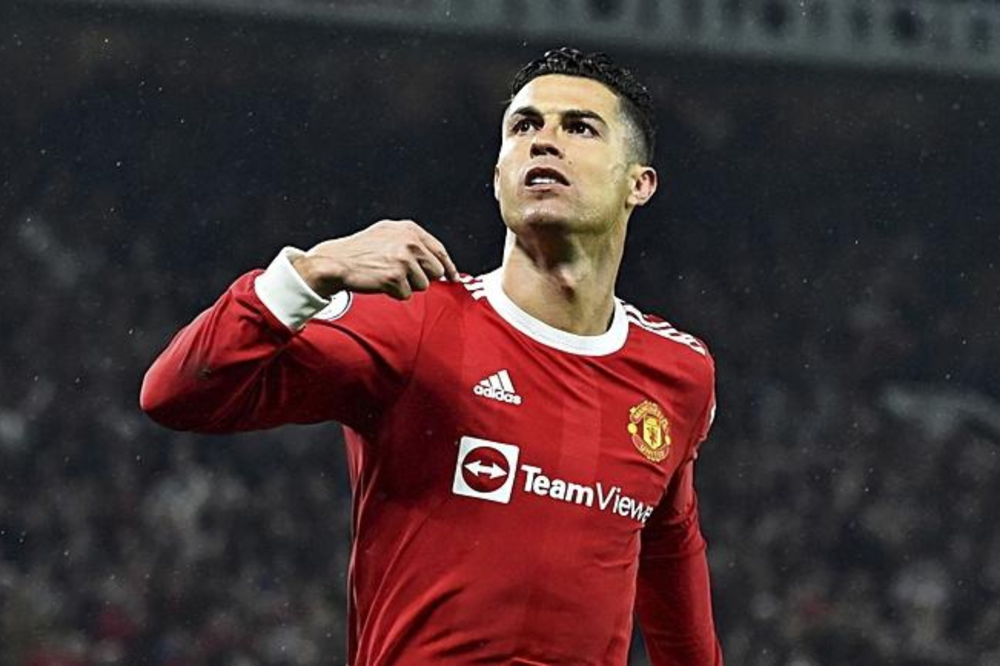

CRISTIANO RONALDO TAMBIÉN CONOCIDO COMO EL CR7

¿QUIÉN ES CRISTIANO RONALDO?
- Es un futbolista portugués que juega como delantero o extremo.
- Es un ugador histórico, estuvo en diversos equipos importantes antes de integrar desde 2021
- el plantel del Manchester United Football Club de la Premier League de Inglaterra.
Es también internacional con la selección de Portugal, equipo del que es capitán y máximo goleador histórico.
¿Qué ha conseguido a lo largo de su carrera?
- Balón de Oro 2008, 2013, 2014, 2016, 2017
- Mejor Jugador de Europa 2008, 2014, 2016, 2017
- Bota de Oro 2008, 2011, 2014, 2015
- Max.Goleador Premier/Trofeo Pichichi 2008, 2011, 2014, 2015
- Máximo Goleador de Champions League 2008, 2013, 2014, 2015, 2016, 2017, 2018
- Mejor Jugador de la Liga/Premier League/Serie A 2007, 2008, 2013, 2014, 2019
- Premio The Best 2016, 2017
- Premio The Best al mejor goleador de todos los tiempos 2021
- >Mejor Jugador del Mundial de Clubes 2016
- Bota de Oro del Mundial de Clubes 2016